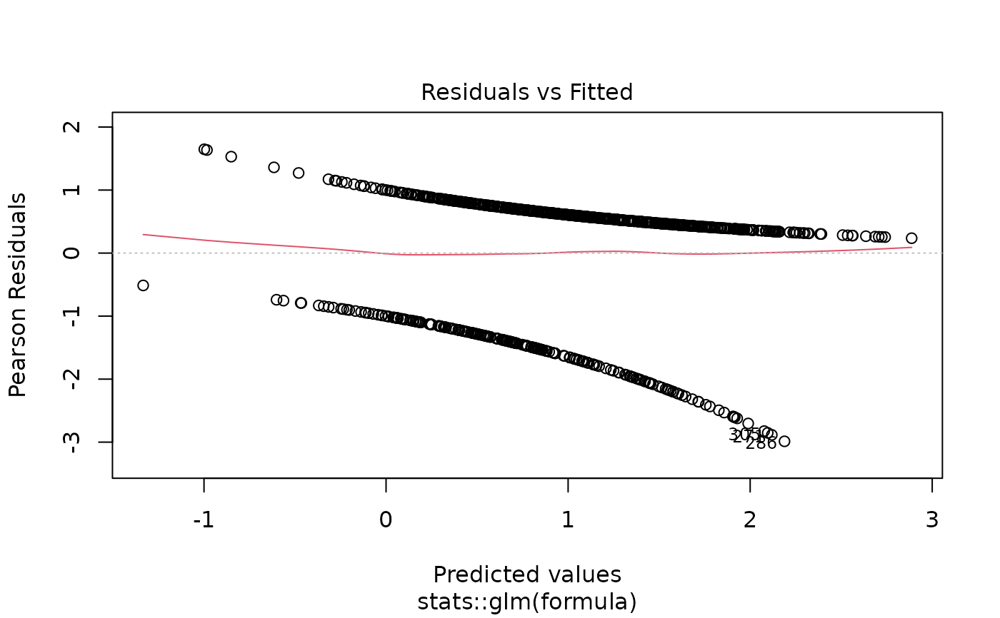
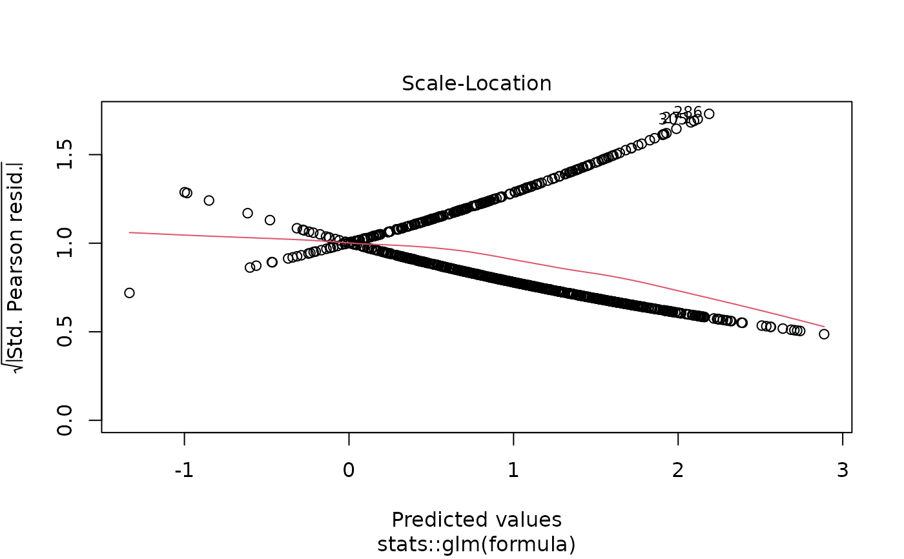
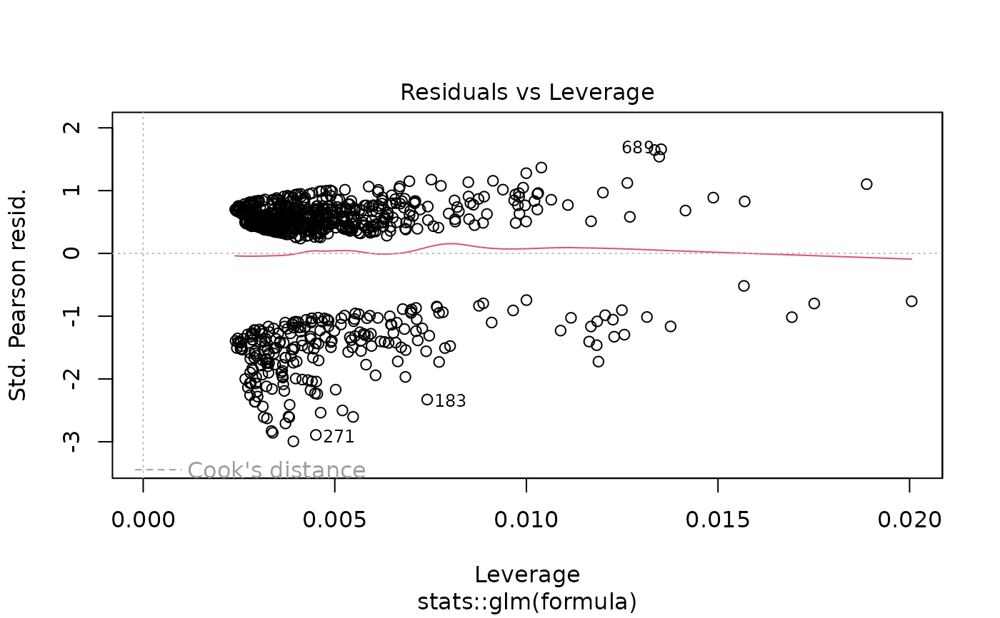

Provides a unified interface for fitting various types of regression models with automatic formatting of results for publication. Supports generalized linear models, linear models, survival models, and mixed-effects models with consistent syntax and output formatting. Handles both univariable and multivariable models automatically.
Usage
fit(
data = NULL,
outcome = NULL,
predictors = NULL,
model = NULL,
model_type = "glm",
family = "binomial",
random = NULL,
interactions = NULL,
strata = NULL,
cluster = NULL,
weights = NULL,
conf_level = 0.95,
reference_rows = TRUE,
show_n = TRUE,
show_events = TRUE,
digits = 2,
p_digits = 3,
labels = NULL,
keep_qc_stats = TRUE,
exponentiate = NULL,
number_format = NULL,
verbose = NULL,
...
)Arguments
- data
Data frame or data.table containing the analysis dataset. Required for formula-based workflow; optional for model-based workflow (extracted from model if not provided).
- outcome
Character string specifying the outcome variable name. For survival analysis, use
Surv()syntax from the survival package (e.g.,"Surv(time, status)"or"Surv(os_months, os_status)"). Required for formula-based workflow; ignored ifmodelis provided.- predictors
Character vector of predictor variable names to include in the model. All predictors are included simultaneously (multivariable model). For univariable models, provide a single predictor. Can include continuous, categorical (factor), or binary variables. Required for formula-based workflow; ignored if
modelis provided.- model
Optional pre-fitted model object to format. When provided,
outcomeandpredictorsare ignored and the model is formatted directly. Supported model classes include:glm- Generalized linear modelsnegbin- Negative binomial models fromMASS::glm.nb()lm- Linear modelscoxph- Cox proportional hazards modelslmerMod,glmerMod- Mixed-effects models from lme4coxme- Mixed-effects Cox models
- model_type
Character string specifying the type of regression model. Ignored if
modelis provided. Options include:"glm"- Generalized linear model (default). Supports multiple distributions via thefamilyparameter including logistic, Poisson, Gamma, Gaussian, and quasi-likelihood models."lm"- Linear regression for continuous outcomes with normally distributed errors. Equivalent toglmwithfamily = "gaussian"."coxph"- Cox proportional hazards model for time-to-event survival analysis. RequiresSurv()outcome syntax."clogit"- Conditional logistic regression for matched case-control studies or stratified analyses."negbin"- Negative binomial regression for overdispersed count data (requires MASS package). Estimates an additional dispersion parameter compared to Poisson regression."lmer"- Linear mixed-effects model for hierarchical or clustered data with continuous outcomes (requires lme4 package)."glmer"- Generalized linear mixed-effects model for hierarchical or clustered data with non-normal outcomes (requires lme4 package)."coxme"- Cox mixed-effects model for clustered survival data (requires coxme package).
- family
For GLM and GLMER models, specifies the error distribution and link function. Can be a character string, a family function, or a family object. Ignored for non-GLM/GLMER models.
Binary/Binomial outcomes:
"binomial"orbinomial()- Logistic regression for binary outcomes (0/1, TRUE/FALSE). Returns odds ratios (OR). Default."quasibinomial"orquasibinomial()- Logistic regression with overdispersion. Use when residual deviance >> residual df.binomial(link = "probit")- Probit regression (normal CDF link).binomial(link = "cloglog")- Complementary log-log link for asymmetric binary outcomes.
Count outcomes:
"poisson"orpoisson()- Poisson regression for count data. Returns rate ratios (RR). Assumes mean = variance."quasipoisson"orquasipoisson()- Poisson regression with overdispersion. Use when variance > mean.
Continuous outcomes:
"gaussian"orgaussian()- Normal/Gaussian distribution for continuous outcomes. Equivalent to linear regression.gaussian(link = "log")- Log-linear model for positive continuous outcomes. Returns multiplicative effects.gaussian(link = "inverse")- Inverse link for specific applications.
Positive continuous outcomes:
"Gamma"orGamma()- Gamma distribution for positive, right-skewed continuous data (e.g., costs, lengths of stay). Default log link.Gamma(link = "inverse")- Gamma with inverse (canonical) link.Gamma(link = "identity")- Gamma with identity link for additive effects on positive outcomes."inverse.gaussian"orinverse.gaussian()- Inverse Gaussian for positive, highly right-skewed data.
For negative binomial regression (overdispersed counts), use
model_type = "negbin"instead of thefamilyparameter.See
familyfor additional details and options.- random
Character string specifying the random-effects formula for mixed-effects models (
glmer,lmer,coxme). Use standard lme4/coxme syntax, e.g.,"(1|site)"for random intercepts by site,"(1|site/patient)"for nested random effects, or"(1|site) + (1|doctor)"for crossed random effects. Required whenmodel_typeis a mixed-effects model type. Alternatively, random effects can be included directly in thepredictorsvector using the same syntax. Default isNULL.- interactions
Character vector of interaction terms using colon notation (e.g.,
c("age:sex", "treatment:stage")). Interaction terms are added to the model in addition to main effects. Default isNULL(no interactions).- strata
For Cox or conditional logistic models, character string naming the stratification variable. Creates separate baseline hazards for each stratum level without estimating stratum effects. Default is
NULL.- cluster
For Cox models, character string naming the variable for robust clustered standard errors. Accounts for within-cluster correlation (e.g., patients within hospitals). Default is
NULL.- weights
Character string naming the weights variable in
data. The specified column should contain numeric values for observation weights. Used for weighted regression, survey data, or inverse probability weighting. Default isNULL.- conf_level
Numeric confidence level for confidence intervals. Must be between 0 and 1. Default is 0.95 (95% confidence intervals).
- reference_rows
Logical. If
TRUE, adds rows for reference categories of factor variables with baseline values (OR/HR/RR = 1, coefficient = 0). Default isTRUE.- show_n
Logical. If
TRUE, includes the sample size column in the output. Default isTRUE.- show_events
Logical. If
TRUE, includes the events column in the output (for survival and logistic regression). Default isTRUE.- digits
Integer specifying the number of decimal places for effect estimates (OR, HR, RR, coefficients). Default is 2.
- p_digits
Integer specifying the number of decimal places for p-values. Values smaller than
10^(-p_digits)are displayed as"< 0.001"(forp_digits = 3),"< 0.0001"(forp_digits = 4), etc. Default is 3.- labels
Named character vector or list providing custom display labels for variables. Names should match variable names, values are display labels. Default is
NULL.- keep_qc_stats
Logical. If
TRUE, includes model quality statistics (AIC, BIC, R-squared, concordance, etc.) in the raw data attribute for model diagnostics and comparison. Default isTRUE.- exponentiate
Logical. Whether to exponentiate coefficients. Default is
NULL, which automatically exponentiates for logistic, Poisson, and Cox models, and displays raw coefficients for linear models. Set toTRUEto force exponentiation orFALSEto force coefficients.- number_format
Character string or two-element character vector controlling thousand and decimal separators in formatted output. Named presets:
"us"- Comma thousands, period decimal:1,234.56[default]"eu"- Period thousands, comma decimal:1.234,56"space"- Thin-space thousands, period decimal:1 234.56(SI/ISO 31-0)"none"- No thousands separator:1234.56
Or provide a custom two-element vector
c(big.mark, decimal.mark), e.g.,c("'", ".")for Swiss-style:1'234.56.When
NULL(default), usesgetOption("summata.number_format", "us"). Set the global option once per session to avoid passing this argument repeatedly:options(summata.number_format = "eu")- verbose
Logical. If
TRUE, displays model fitting warnings (e.g., singular fit, convergence issues). IfFALSE(default), routine fitting messages are suppressed while unexpected warnings are preserved. WhenNULL, usesgetOption("summata.verbose", FALSE).- ...
Additional arguments passed to the underlying model fitting function (
glm,lm,coxph,glmer, etc.). Common options includesubset,na.action, and model-specific control parameters.
Value
A data.table with S3 class "fit_result" containing formatted
regression results. The table structure includes:
- Variable
Character. Predictor name or custom label
- Group
Character. For factor variables: category level. For interactions: interaction term. For continuous: typically empty
- n
Integer. Total sample size (if
show_n = TRUE)- n_group
Integer. Sample size for this factor level
- events
Integer. Total number of events (if
show_events = TRUE)- events_group
Integer. Events for this factor level
- OR/HR/RR/Coefficient or aOR/aHR/aRR/Adj. Coefficient (95% CI)
Character. Formatted effect estimate with confidence interval. Column name depends on model type and scope. Univariable models use: OR, HR, RR, Coefficient. Multivariable models use adjusted notation: aOR, aHR, aRR, Adj. Coefficient
- p-value
Character. Formatted p-value from Wald test
The returned object includes the following attributes accessible via attr():
- model
The fitted model object (glm, lm, coxph, etc.). Access for diagnostics, predictions, or further analysis
- raw_data
data.table. Unformatted numeric results with columns for coefficients, standard errors, confidence bounds, quality statistics, etc.
- outcome
Character. The outcome variable name
- predictors
Character vector. The predictor variable names
- formula_str
Character. The complete model formula as a string
- model_scope
Character. "Univariable" (one predictor) or "Multivariable" (multiple predictors)
- model_type
Character. The regression model type used
- interactions
Character vector (if interactions specified). The interaction terms included
- strata
Character (if stratification used). The stratification variable
- cluster
Character (if clustering used). The cluster variable
- weights
Character (if weighting used). The weights variable
- significant
Character vector. Names of predictors with p-value below 0.05, suitable for downstream variable selection workflows
Details
Model Scope Detection:
The function automatically detects whether the model is:
Univariable: Single predictor (e.g.,
predictors = "age"). Effect estimates are labeled as unadjusted ("OR", "HR", etc.), representing crude (unadjusted) associationMultivariable: Multiple predictors (e.g.,
predictors = c("age", "sex", "treatment")) Effect estimates are labeled as adjusted ("aOR", "aHR", etc.), representing associations adjusted for confounding
Interaction Terms:
Interactions are specified using colon notation and added to the model:
interactions = c("age:treatment")creates interaction between age and treatmentMain effects for both variables are automatically included
Multiple interactions can be specified:
c("age:sex", "treatment:stage")For interactions between categorical variables, separate terms are created for each combination of levels
Stratification (Cox/Conditional Logistic):
The strata parameter creates separate baseline hazards:
Allows baseline hazard to vary across strata without estimating stratum effects
Useful when proportional hazards assumption violated across strata
Example:
strata = "center"for multicenter studiesStratification variable is not included as a predictor
Clustering (Cox Models):
The cluster parameter computes robust standard errors:
Accounts for within-cluster correlation (e.g., multiple observations per patient)
Uses sandwich variance estimator
Does not change point estimates, only standard errors and p-values
Weighting:
The weights parameter enables weighted regression:
For survey data with sampling weights
Inverse probability weighting for causal inference
Frequency weights for aggregated data
Weights should be in a column of
data
Mixed-Effects Models (lmer/glmer/coxme):
Mixed effects models handle hierarchical or clustered data:
Use
model_type = "lmer"for continuous/normal outcomesUse
model_type = "glmer"with appropriatefamilyfor GLM outcomesUse
model_type = "coxme"for survival outcomes with clusteringRandom effects are specified in predictors using lme4 syntax:
"(1|site)"- Random intercepts by site"(treatment|site)"- Random slopes for treatment by site"(1 + treatment|site)"- Both random intercepts and slopes
Include random effects as part of the predictors vector
Example:
predictors = c("age", "treatment", "(1|site)")
Effect Measures by Model Type:
Logistic (
family = "binomial"/"quasibinomial"): Odds ratios (OR/aOR)Cox (
model_type = "coxph"): Hazard ratios (HR/aHR)Poisson/Count (
family = "poisson"/"quasipoisson"): Rate ratios (RR/aRR)Negative binomial (
model_type = "negbin"): Rate ratios (RR/aRR)Gamma/Log-link: Ratios (multiplicative effects)
Linear/Gaussian: Raw coefficient estimates (additive effects)
Confidence Intervals:
Confidence intervals are computed using the Wald method. This is the standard approach for GLM, Cox, and mixed-effects regression and is appropriate for standard sample sizes. The Wald interval is computed directly from the coefficient and standard error, avoiding redundant matrix operations.
For small samples, sparse data, or parameters near boundary values, profile likelihood confidence intervals may be preferred. These can be obtained from the underlying model object:
See also
uniscreen for univariable screening of multiple predictors,
fullfit for complete univariable-to-multivariable workflow,
compfit for comparing multiple models,
m2dt for model-to-table conversion
Other regression functions:
compfit(),
fullfit(),
multifit(),
print.compfit_result(),
print.fit_result(),
print.fullfit_result(),
print.multifit_result(),
print.uniscreen_result(),
uniscreen()
Examples
# Load example data
data(clintrial)
data(clintrial_labels)
library(survival)
# Example 1: Univariable logistic regression
uni_model <- fit(
data = clintrial,
outcome = "os_status",
predictors = "age"
)
print(uni_model)
#>
#> Univariable Logistic Model
#> Formula: os_status ~ age
#> n = 850, Events = 609
#>
#> Variable Group n Events OR (95% CI) p-value
#> <char> <char> <char> <char> <char> <char>
#> 1: age - 850 609 1.05 (1.03-1.06) < 0.001
# Labeled as "Univariable OR"
# \donttest{
# Example 2: Multivariable logistic regression
multi_model <- fit(
data = clintrial,
outcome = "os_status",
predictors = c("age", "sex", "bmi", "treatment"),
labels = clintrial_labels
)
print(multi_model)
#>
#> Multivariable Logistic Model
#> Formula: os_status ~ age + sex + bmi + treatment
#> n = 838, Events = 599
#>
#> Variable Group n Events aOR (95% CI) p-value
#> <char> <char> <char> <char> <char> <char>
#> 1: Age (years) - 838 599 1.05 (1.04-1.07) < 0.001
#> 2: Sex Female 445 294 reference -
#> 3: Male 393 305 1.86 (1.35-2.56) < 0.001
#> 4: Body Mass Index (kg/m²) - 838 599 1.03 (0.99-1.06) 0.115
#> 5: Treatment Group Control 194 149 reference -
#> 6: Drug A 288 181 0.48 (0.31-0.73) < 0.001
#> 7: Drug B 356 269 0.86 (0.56-1.32) 0.494
# Example 3: Cox proportional hazards model
cox_model <- fit(
data = clintrial,
outcome = "Surv(os_months, os_status)",
predictors = c("age", "sex", "treatment", "stage"),
model_type = "coxph",
labels = clintrial_labels
)
print(cox_model)
#>
#> Multivariable Cox PH Model
#> Formula: Surv(os_months, os_status) ~ age + sex + treatment + stage
#> n = 847, Events = 606
#>
#> Variable Group n Events aHR (95% CI) p-value
#> <char> <char> <char> <char> <char> <char>
#> 1: Age (years) - 847 606 1.04 (1.03-1.04) < 0.001
#> 2: Sex Female 450 298 reference -
#> 3: Male 400 311 1.33 (1.13-1.56) < 0.001
#> 4: Treatment Group Control 196 151 reference -
#> 5: Drug A 292 184 0.56 (0.45-0.70) < 0.001
#> 6: Drug B 362 274 0.83 (0.67-1.01) 0.062
#> 7: Disease Stage I 211 127 reference -
#> 8: II 263 172 1.16 (0.92-1.46) 0.214
#> 9: III 241 186 1.90 (1.51-2.38) < 0.001
#> 10: IV 132 121 3.57 (2.77-4.60) < 0.001
# Example 4: Model with interaction terms
interact_model <- fit(
data = clintrial,
outcome = "os_status",
predictors = c("age", "treatment", "sex"),
interactions = c("age:treatment"),
labels = clintrial_labels
)
print(interact_model)
#>
#> Multivariable Logistic Model
#> Formula: os_status ~ age + treatment + sex + age:treatment
#> n = 850, Events = 609
#>
#> Variable Group n Events aOR (95% CI) p-value
#> <char> <char> <char> <char> <char> <char>
#> 1: Age (years) - 850 609 1.04 (1.01-1.07) 0.012
#> 2: Treatment Group Control 196 151 reference -
#> 3: Drug A 292 184 0.48 (0.06-4.21) 0.511
#> 4: Drug B 362 274 0.18 (0.02-1.68) 0.133
#> 5: Sex Female 450 298 reference -
#> 6: Male 400 311 1.86 (1.35-2.56) < 0.001
#> 7: Age (years) × Treatment Group (Drug A) - 292 184 1.00 (0.96-1.04) 0.993
#> 8: Age (years) × Treatment Group (Drug B) - 362 274 1.03 (0.99-1.07) 0.164
# Example 5: Cox model with stratification
strat_model <- fit(
data = clintrial,
outcome = "Surv(os_months, os_status)",
predictors = c("age", "sex", "treatment"),
model_type = "coxph",
strata = "site", # Separate baseline hazards by site
labels = clintrial_labels
)
print(strat_model)
#>
#> Multivariable Cox PH Model
#> Formula: Surv(os_months, os_status) ~ age + sex + treatment + strata( site )
#> n = 850, Events = 609
#>
#> Variable Group n Events aHR (95% CI) p-value
#> <char> <char> <char> <char> <char> <char>
#> 1: Age (years) - 850 609 1.04 (1.03-1.04) < 0.001
#> 2: Sex Female 450 298 reference -
#> 3: Male 400 311 1.28 (1.09-1.50) 0.003
#> 4: Treatment Group Control 196 151 reference -
#> 5: Drug A 292 184 0.62 (0.50-0.77) < 0.001
#> 6: Drug B 362 274 1.00 (0.81-1.22) 0.976
# Example 6: Cox model with clustering
cluster_model <- fit(
data = clintrial,
outcome = "Surv(os_months, os_status)",
predictors = c("age", "treatment"),
model_type = "coxph",
cluster = "site", # Robust SEs accounting for site clustering
labels = clintrial_labels
)
print(cluster_model)
#>
#> Multivariable Cox PH Model
#> Formula: Surv(os_months, os_status) ~ age + treatment
#> n = 850, Events = 609
#>
#> Variable Group n Events aHR (95% CI) p-value
#> <char> <char> <char> <char> <char> <char>
#> 1: Age (years) - 850 609 1.03 (1.03-1.04) < 0.001
#> 2: Treatment Group Control 196 151 reference -
#> 3: Drug A 292 184 0.61 (0.45-0.83) 0.001
#> 4: Drug B 362 274 0.91 (0.68-1.22) 0.534
# Example 7: Linear regression
linear_model <- fit(
data = clintrial,
outcome = "bmi",
predictors = c("age", "sex", "smoking"),
model_type = "lm",
labels = clintrial_labels
)
print(linear_model)
#>
#> Multivariable Linear Model
#> Formula: bmi ~ age + sex + smoking
#> n = 833
#>
#> Variable Group n Adj. Coefficient (95% CI) p-value
#> <char> <char> <char> <char> <char>
#> 1: Age (years) - 833 -0.02 (-0.05 to 0.01) 0.141
#> 2: Sex Female 443 reference -
#> 3: Male 390 -0.33 (-1.00 to 0.34) 0.337
#> 4: Smoking Status Never 337 reference -
#> 5: Former 311 0.15 (-0.61 to 0.92) 0.692
#> 6: Current 185 0.25 (-0.63 to 1.14) 0.577
# Example 8: Poisson regression for equidispersed count data
# fu_count has variance ~= mean, appropriate for standard Poisson
poisson_model <- fit(
data = clintrial,
outcome = "fu_count",
predictors = c("age", "stage", "treatment", "surgery"),
model_type = "glm",
family = "poisson",
labels = clintrial_labels
)
print(poisson_model)
#>
#> Multivariable Poisson Model
#> Formula: fu_count ~ age + stage + treatment + surgery
#> n = 839, Events = 5517
#>
#> Variable Group n Events aRR (95% CI) p-value
#> <char> <char> <char> <char> <char> <char>
#> 1: Age (years) - 839 5,517 1.00 (1.00-1.00) 0.038
#> 2: Disease Stage I 207 1,238 reference -
#> 3: II 261 1,638 1.05 (0.98-1.13) 0.169
#> 4: III 240 1,638 1.14 (1.06-1.23) < 0.001
#> 5: IV 131 1,003 1.33 (1.21-1.45) < 0.001
#> 6: Treatment Group Control 191 1,169 reference -
#> 7: Drug A 290 1,910 1.06 (0.99-1.14) 0.101
#> 8: Drug B 358 2,438 1.12 (1.04-1.20) 0.002
#> 9: Surgical Resection No 476 3,091 reference -
#> 10: Yes 363 2,426 1.09 (1.03-1.16) 0.003
# Returns rate ratios (RR/aRR)
# Example 9: Negative binomial regression for overdispersed counts
# ae_count has variance > mean (overdispersed), use negbin or quasipoisson
if (requireNamespace("MASS", quietly = TRUE)) {
nb_result <- fit(
data = clintrial,
outcome = "ae_count",
predictors = c("age", "treatment", "diabetes", "surgery"),
model_type = "negbin",
labels = clintrial_labels
)
print(nb_result)
}
#>
#> Multivariable Negative Binomial Model
#> Formula: ae_count ~ age + treatment + diabetes + surgery
#> n = 824, Events = 4506
#>
#> Variable Group n Events aRR (95% CI) p-value
#> <char> <char> <char> <char> <char> <char>
#> 1: Age (years) - 824 4,506 1.01 (1.01-1.02) < 0.001
#> 2: Treatment Group Control 189 826 reference -
#> 3: Drug A 287 1,221 0.94 (0.81-1.09) 0.434
#> 4: Drug B 348 2,459 1.58 (1.37-1.82) < 0.001
#> 5: Diabetes No 630 2,998 reference -
#> 6: Yes 194 1,508 1.56 (1.38-1.77) < 0.001
#> 7: Surgical Resection No 465 2,578 reference -
#> 8: Yes 359 1,928 1.19 (1.06-1.33) 0.004
# Example 10: Gamma regression for positive continuous outcomes
gamma_model <- fit(
data = clintrial,
outcome = "los_days",
predictors = c("age", "treatment", "surgery"),
model_type = "glm",
family = Gamma(link = "log"),
labels = clintrial_labels
)
print(gamma_model)
#>
#> Multivariable Gamma Model
#> Formula: los_days ~ age + treatment + surgery
#> n = 830
#>
#> Variable Group n Adj. Coefficient (95% CI) p-value
#> <char> <char> <char> <char> <char>
#> 1: Age (years) - 830 1.01 (1.01-1.01) < 0.001
#> 2: Treatment Group Control 192 reference -
#> 3: Drug A 288 0.94 (0.91-0.98) 0.001
#> 4: Drug B 350 1.16 (1.12-1.21) < 0.001
#> 5: Surgical Resection No 460 reference -
#> 6: Yes 370 1.13 (1.09-1.16) < 0.001
# Example 11: Access the underlying fitted model
result <- fit(
data = clintrial,
outcome = "os_status",
predictors = c("age", "sex", "bmi")
)
# Get the model object
model_obj <- attr(result, "model")
summary(model_obj)
#>
#> Call:
#> stats::glm(formula = formula, family = family, data = data)
#>
#> Coefficients:
#> Estimate Std. Error z value Pr(>|z|)
#> (Intercept) -2.847912 0.651588 -4.371 1.24e-05 ***
#> age 0.048020 0.007174 6.693 2.18e-11 ***
#> sexMale 0.630428 0.162566 3.878 0.000105 ***
#> bmi 0.024236 0.016290 1.488 0.136800
#> ---
#> Signif. codes: 0 ‘***’ 0.001 ‘**’ 0.01 ‘*’ 0.05 ‘.’ 0.1 ‘ ’ 1
#>
#> (Dispersion parameter for binomial family taken to be 1)
#>
#> Null deviance: 1001.91 on 837 degrees of freedom
#> Residual deviance: 937.94 on 834 degrees of freedom
#> (12 observations deleted due to missingness)
#> AIC: 945.94
#>
#> Number of Fisher Scoring iterations: 4
#>
# Model diagnostics
plot(model_obj)




# Predictions
preds <- predict(model_obj, type = "response")
# Example 12: Access raw numeric data
raw_data <- attr(result, "raw_data")
print(raw_data)
#> model_scope model_type term n events coefficient se coef coef_lower coef_upper exp_coef exp_lower exp_upper OR ci_lower ci_upper statistic p_value AIC BIC deviance null_deviance
#> <char> <char> <char> <int> <num> <num> <num> <num> <num> <num> <num> <num> <num> <num> <num> <num> <num> <num> <num> <num> <num> <num>
#> 1: Multivariable Logistic age 838 599 0.04801974 0.007174285 0.04801974 0.033958405 0.06208108 1.049191 1.0345416 1.064049 1.049191 1.0345416 1.064049 6.693315 2.181713e-11 945.9441 964.8681 937.9441 1001.913
#> 2: Multivariable Logistic sexFemale 445 294 0.00000000 NA 0.00000000 NA NA 1.000000 NA NA 1.000000 NA NA NA NA 945.9441 964.8681 937.9441 1001.913
#> 3: Multivariable Logistic sexMale 393 305 0.63042825 0.162565588 0.63042825 0.311805551 0.94905095 1.878415 1.3658891 2.583257 1.878415 1.3658891 2.583257 3.877993 1.053217e-04 945.9441 964.8681 937.9441 1001.913
#> 4: Multivariable Logistic bmi 838 599 0.02423580 0.016289550 0.02423580 -0.007691127 0.05616274 1.024532 0.9923384 1.057770 1.024532 0.9923384 1.057770 1.487813 1.368002e-01 945.9441 964.8681 937.9441 1001.913
#> df_residual c_statistic hoslem_chi2 hoslem_p variable group n_group events_group reference sig sig_binary
#> <int> <num> <num> <num> <char> <char> <num> <num> <char> <char> <lgcl>
#> 1: 834 0.6745587 3.109658 0.9272885 age NA NA *** TRUE
#> 2: NA 0.6745587 NA NA sex Female 445 294 reference FALSE
#> 3: 834 0.6745587 3.109658 0.9272885 sex Male 393 305 *** TRUE
#> 4: 834 0.6745587 3.109658 0.9272885 bmi NA NA FALSE
# Contains unformatted coefficients, SEs, CIs, AIC, BIC, etc.
# Example 13: Multiple interactions
complex_model <- fit(
data = clintrial,
outcome = "os_status",
predictors = c("age", "sex", "treatment", "bmi"),
interactions = c("age:treatment", "sex:bmi"),
labels = clintrial_labels
)
print(complex_model)
#>
#> Multivariable Logistic Model
#> Formula: os_status ~ age + sex + treatment + bmi + age:treatment + sex:bmi
#> n = 838, Events = 599
#>
#> Variable Group n Events aOR (95% CI) p-value
#> <char> <char> <char> <char> <char> <char>
#> 1: Age (years) - 838 599 1.04 (1.01-1.07) 0.013
#> 2: Sex Female 445 294 reference -
#> 3: Male 393 305 3.20 (0.50-20.55) 0.220
#> 4: Treatment Group Control 194 149 reference -
#> 5: Drug A 288 181 0.52 (0.06-4.58) 0.553
#> 6: Drug B 356 269 0.17 (0.02-1.59) 0.121
#> 7: Body Mass Index (kg/m²) - 838 599 1.03 (0.99-1.08) 0.121
#> 8: Age (years) × Treatment Group (Drug A) - 288 181 1.00 (0.96-1.04) 0.954
#> 9: Age (years) × Treatment Group (Drug B) - 356 269 1.03 (0.99-1.07) 0.150
#> 10: Sex (Male) × Body Mass Index (kg/m²) - 393 305 0.98 (0.92-1.05) 0.571
# Example 14: Customize output columns
minimal <- fit(
data = clintrial,
outcome = "os_status",
predictors = c("age", "sex", "treatment"),
show_n = FALSE,
show_events = FALSE,
reference_rows = FALSE
)
print(minimal)
#>
#> Multivariable Logistic Model
#> Formula: os_status ~ age + sex + treatment
#> n = 850, Events = 609
#>
#> Variable Group aOR (95% CI) p-value
#> <char> <char> <char> <char>
#> 1: age - 1.05 (1.04-1.07) < 0.001
#> 2: sex Male 1.83 (1.33-2.52) < 0.001
#> 3: treatment Drug A 0.48 (0.31-0.73) < 0.001
#> 4: Drug B 0.86 (0.56-1.32) 0.492
# Example 15: Different confidence levels
ci90 <- fit(
data = clintrial,
outcome = "os_status",
predictors = c("age", "treatment"),
conf_level = 0.90 # 90% confidence intervals
)
print(ci90)
#>
#> Multivariable Logistic Model
#> Formula: os_status ~ age + treatment
#> n = 850, Events = 609
#>
#> Variable Group n Events aOR (90% CI) p-value
#> <char> <char> <char> <char> <char> <char>
#> 1: age - 850 609 1.05 (1.04-1.06) < 0.001
#> 2: treatment Control 196 151 reference -
#> 3: Drug A 292 184 0.47 (0.33-0.67) < 0.001
#> 4: Drug B 362 274 0.87 (0.61-1.24) 0.518
# Example 16: Force coefficient display instead of OR
coef_model <- fit(
data = clintrial,
outcome = "os_status",
predictors = c("age", "bmi"),
exponentiate = FALSE # Show log odds instead of OR
)
print(coef_model)
#>
#> Multivariable Logistic Model
#> Formula: os_status ~ age + bmi
#> n = 838, Events = 599
#>
#> Variable Group n Events Adj. Coefficient (95% CI) p-value
#> <char> <char> <char> <char> <char> <char>
#> 1: age - 838 599 0.05 (0.03 to 0.06) < 0.001
#> 2: bmi - 838 599 0.02 (-0.01 to 0.05) 0.178
# Example 17: Check model quality statistics
result <- fit(
data = clintrial,
outcome = "os_status",
predictors = c("age", "sex", "treatment", "stage"),
keep_qc_stats = TRUE
)
raw <- attr(result, "raw_data")
cat("AIC:", raw$AIC[1], "\n")
#> AIC: 885.994
cat("BIC:", raw$BIC[1], "\n")
#> BIC: 923.9276
cat("C-statistic:", raw$c_statistic[1], "\n")
#> C-statistic: 0.7554538
# Example 18: Interaction effects - treatment effect modified by stage
interaction_model <- fit(
data = clintrial,
outcome = "Surv(os_months, os_status)",
predictors = c("age", "treatment", "stage"),
interactions = c("treatment:stage"),
model_type = "coxph",
labels = clintrial_labels
)
print(interaction_model)
#>
#> Multivariable Cox PH Model
#> Formula: Surv(os_months, os_status) ~ age + treatment + stage + treatment:stage
#> n = 847, Events = 606
#>
#> Variable Group n Events aHR (95% CI) p-value
#> <char> <char> <char> <char> <char> <char>
#> 1: Age (years) - 847 606 1.04 (1.03-1.05) < 0.001
#> 2: Treatment Group Control 196 151 reference -
#> 3: Drug A 292 184 0.71 (0.46-1.09) 0.120
#> 4: Drug B 362 274 0.68 (0.44-1.04) 0.076
#> 5: Disease Stage I 211 127 reference -
#> 6: II 263 172 1.11 (0.73-1.70) 0.624
#> 7: III 241 186 1.86 (1.17-2.96) 0.009
#> 8: IV 132 121 3.72 (2.30-6.02) < 0.001
#> 9: Treatment Group (Drug A) × Disease Stage (II) - 93 52 0.79 (0.44-1.41) 0.416
#> 10: Treatment Group (Drug A) × Disease Stage (III) - 75 50 0.70 (0.38-1.29) 0.248
#> 11: Treatment Group (Drug A) × Disease Stage (IV) - 46 37 0.68 (0.36-1.30) 0.248
#> 12: Treatment Group (Drug B) × Disease Stage (II) - 105 73 1.33 (0.75-2.35) 0.327
#> 13: Treatment Group (Drug B) × Disease Stage (III) - 127 103 1.30 (0.73-2.34) 0.375
#> 14: Treatment Group (Drug B) × Disease Stage (IV) - 55 54 1.17 (0.63-2.18) 0.620
# Shows main effects plus all treatment×stage interaction terms
# Example 19: Multiple interactions in logistic regression
multi_interaction <- fit(
data = clintrial,
outcome = "readmission_30d",
predictors = c("age", "sex", "surgery", "diabetes"),
interactions = c("surgery:diabetes", "age:sex"),
labels = clintrial_labels
)
print(multi_interaction)
#>
#> Multivariable Logistic Model
#> Formula: readmission_30d ~ age + sex + surgery + diabetes + surgery:diabetes + age:sex
#> n = 834, Events = 417
#>
#> Variable Group n Events aOR (95% CI) p-value
#> <char> <char> <char> <char> <char> <char>
#> 1: Age (years) - 834 417 1.04 (1.02-1.06) < 0.001
#> 2: Sex Female 444 207 reference -
#> 3: Male 390 210 2.64 (0.60-11.65) 0.200
#> 4: Surgical Resection No 472 241 reference -
#> 5: Yes 362 176 1.16 (0.83-1.60) 0.384
#> 6: Diabetes No 637 301 reference -
#> 7: Yes 197 116 1.99 (1.27-3.12) 0.003
#> 8: Age (years) × Sex (Male) - 390 210 0.99 (0.97-1.01) 0.376
#> 9: Surgical Resection (Yes) × Diabetes (Yes) - 88 48 0.69 (0.35-1.33) 0.267
# Example 20: Quasipoisson for overdispersed count data
# Alternative to negative binomial when MASS not available
quasi_model <- fit(
data = clintrial,
outcome = "ae_count",
predictors = c("age", "treatment", "diabetes", "surgery"),
model_type = "glm",
family = "quasipoisson",
labels = clintrial_labels
)
print(quasi_model)
#>
#> Multivariable Quasi-Poisson Model
#> Formula: ae_count ~ age + treatment + diabetes + surgery
#> n = 824, Events = 4506
#>
#> Variable Group n Events aRR (95% CI) p-value
#> <char> <char> <char> <char> <char> <char>
#> 1: Age (years) - 824 4,506 1.01 (1.01-1.02) < 0.001
#> 2: Treatment Group Control 189 826 reference -
#> 3: Drug A 287 1,221 0.93 (0.79-1.09) 0.382
#> 4: Drug B 348 2,459 1.61 (1.39-1.86) < 0.001
#> 5: Diabetes No 630 2,998 reference -
#> 6: Yes 194 1,508 1.63 (1.46-1.83) < 0.001
#> 7: Surgical Resection No 465 2,578 reference -
#> 8: Yes 359 1,928 1.19 (1.06-1.34) 0.003
# Adjusts standard errors for overdispersion
# Example 21: Quasibinomial for overdispersed binary data
quasi_logistic <- fit(
data = clintrial,
outcome = "any_complication",
predictors = c("age", "bmi", "diabetes", "surgery"),
model_type = "glm",
family = "quasibinomial",
labels = clintrial_labels
)
print(quasi_logistic)
#>
#> Multivariable Quasi-Binomial Model
#> Formula: any_complication ~ age + bmi + diabetes + surgery
#> n = 833, Events = 468
#>
#> Variable Group n Events aOR (95% CI) p-value
#> <char> <char> <char> <char> <char> <char>
#> 1: Age (years) - 833 468 1.01 (1.00-1.03) 0.031
#> 2: Body Mass Index (kg/m²) - 833 468 1.01 (0.98-1.03) 0.707
#> 3: Diabetes No 636 335 reference -
#> 4: Yes 197 133 1.89 (1.34-2.67) < 0.001
#> 5: Surgical Resection No 471 239 reference -
#> 6: Yes 362 229 1.79 (1.34-2.40) < 0.001
# Example 22: Gamma regression with identity link for additive effects
gamma_identity <- fit(
data = clintrial,
outcome = "los_days",
predictors = c("age", "treatment", "surgery", "any_complication"),
model_type = "glm",
family = Gamma(link = "identity"),
labels = clintrial_labels
)
print(gamma_identity)
#>
#> Multivariable Gamma Model
#> Formula: los_days ~ age + treatment + surgery + any_complication
#> n = 830
#>
#> Variable Group n Adj. Coefficient (95% CI) p-value
#> <char> <char> <char> <char> <char>
#> 1: Age (years) - 830 0.13 (0.11 to 0.15) < 0.001
#> 2: Treatment Group Control 192 reference -
#> 3: Drug A 288 -1.00 (-1.69 to -0.32) 0.004
#> 4: Drug B 350 2.79 (2.08 to 3.50) < 0.001
#> 5: Surgical Resection No 460 reference -
#> 6: Yes 370 1.92 (1.34 to 2.50) < 0.001
#> 7: Any Complication No complication 362 reference -
#> 8: Any complication 468 2.11 (1.56 to 2.66) < 0.001
# Shows additive effects (coefficients) instead of multiplicative (ratios)
# Example 23: Inverse Gaussian regression for highly skewed data
inverse_gaussian <- fit(
data = clintrial,
outcome = "recovery_days",
predictors = c("age", "surgery", "pain_score"),
model_type = "glm",
family = inverse.gaussian(link = "log"),
labels = clintrial_labels
)
print(inverse_gaussian)
#>
#> Multivariable Inverse.gaussian GLM Model
#> Formula: recovery_days ~ age + surgery + pain_score
#> n = 825
#>
#> Variable Group n Adj. Coefficient (95% CI) p-value
#> <char> <char> <char> <char> <char>
#> 1: Age (years) - 825 1.01 (1.01-1.02) < 0.001
#> 2: Surgical Resection No 464 reference -
#> 3: Yes 361 1.26 (1.18-1.34) < 0.001
#> 4: Postoperative Pain Score (0-10) - 825 1.04 (1.02-1.05) < 0.001
# Example 24: Linear mixed effects with random intercepts
# Accounts for clustering of patients within sites
if (requireNamespace("lme4", quietly = TRUE)) {
lmer_model <- fit(
data = clintrial,
outcome = "los_days",
predictors = c("age", "treatment", "stage", "(1|site)"),
model_type = "lmer",
labels = clintrial_labels
)
print(lmer_model)
}
#> Registered S3 methods overwritten by 'MuMIn':
#> method from
#> formula.coxme coxme
#> logLik.lmekin coxme
#>
#> Multivariable Linear Mixed Model
#> Formula: los_days ~ age + treatment + stage + (1|site)
#> n = 827
#>
#> Variable Group n Adj. Coefficient (95% CI) p-value
#> <char> <char> <char> <char> <char>
#> 1: Age (years) - 827 0.14 (0.11 to 0.16) < 0.001
#> 2: Treatment Group Control 190 reference -
#> 3: Drug A 288 -0.98 (-1.73 to -0.24) 0.009
#> 4: Drug B 349 2.42 (1.70 to 3.14) < 0.001
#> 5: Disease Stage I 207 reference -
#> 6: II 259 1.26 (0.52 to 2.00) < 0.001
#> 7: III 235 2.39 (1.62 to 3.15) < 0.001
#> 8: IV 126 2.93 (2.04 to 3.82) < 0.001
# Example 25: Generalized linear mixed effects (logistic with random effects)
if (requireNamespace("lme4", quietly = TRUE)) {
glmer_model <- fit(
data = clintrial,
outcome = "readmission_30d",
predictors = c("age", "surgery", "los_days", "(1|site)"),
model_type = "glmer",
family = "binomial",
labels = clintrial_labels
)
print(glmer_model)
}
#>
#> Multivariable glmerMod Model
#> Formula: readmission_30d ~ age + surgery + los_days + (1|site)
#> n = 830, Events = 418
#>
#> Variable Group n Events aOR (95% CI) p-value
#> <char> <char> <char> <char> <char> <char>
#> 1: Age (years) - 830 418 1.01 (1.00-1.03) 0.045
#> 2: Surgical Resection No 460 237 reference -
#> 3: Yes 370 181 0.85 (0.62-1.15) 0.285
#> 4: Length of Hospital Stay (days) - 830 418 1.15 (1.11-1.19) < 0.001
# Example 26: Cox mixed effects for clustered survival data
if (requireNamespace("coxme", quietly = TRUE)) {
coxme_model <- fit(
data = clintrial,
outcome = "Surv(os_months, os_status)",
predictors = c("age", "treatment", "stage", "(1|site)"),
model_type = "coxme",
labels = clintrial_labels
)
print(coxme_model)
}
#>
#> Multivariable Mixed Effects Cox Model
#> Formula: Surv(os_months, os_status) ~ age + treatment + stage + (1|site)
#> n = 847, Events = 606
#>
#> Variable Group n Events aHR (95% CI) p-value
#> <char> <char> <char> <char> <char> <char>
#> 1: Age (years) - 847 606 1.04 (1.03-1.05) < 0.001
#> 2: Treatment Group Control 196 151 reference -
#> 3: Drug A 292 184 0.57 (0.46-0.71) < 0.001
#> 4: Drug B 362 274 0.94 (0.76-1.15) 0.534
#> 5: Disease Stage I 211 127 reference -
#> 6: II 263 172 1.16 (0.92-1.47) 0.210
#> 7: III 241 186 1.98 (1.57-2.50) < 0.001
#> 8: IV 132 121 3.95 (3.06-5.11) < 0.001
# Example 27: Random slopes - treatment effect varies by site
if (requireNamespace("lme4", quietly = TRUE)) {
random_slopes <- fit(
data = clintrial,
outcome = "los_days",
predictors = c("age", "treatment", "stage", "(treatment|site)"),
model_type = "lmer",
labels = clintrial_labels
)
print(random_slopes)
}
#> boundary (singular) fit: see help('isSingular')
#>
#> Multivariable Linear Mixed Model
#> Formula: los_days ~ age + treatment + stage + (treatment|site)
#> n = 827
#>
#> Variable Group n Adj. Coefficient (95% CI) p-value
#> <char> <char> <char> <char> <char>
#> 1: Age (years) - 827 0.14 (0.11 to 0.16) < 0.001
#> 2: Treatment Group Control 190 reference -
#> 3: Drug A 288 -0.99 (-1.85 to -0.13) 0.024
#> 4: Drug B 349 2.40 (1.64 to 3.16) < 0.001
#> 5: Disease Stage I 207 reference -
#> 6: II 259 1.28 (0.54 to 2.02) < 0.001
#> 7: III 235 2.40 (1.64 to 3.17) < 0.001
#> 8: IV 126 2.98 (2.08 to 3.87) < 0.001
# Example 28: Format a pre-fitted model (model-based workflow)
# Useful for models fitted outside of fit()
pre_fitted <- glm(os_status ~ age + sex + treatment,
family = binomial, data = clintrial)
result <- fit(model = pre_fitted,
data = clintrial,
labels = clintrial_labels)
print(result)
#>
#> Multivariable Logistic Model
#> Formula: os_status ~ age + sex + treatment
#> n = 850, Events = 609
#>
#> Variable Group n Events aOR (95% CI) p-value
#> <char> <char> <char> <char> <char> <char>
#> 1: Age (years) - 850 609 1.05 (1.04-1.07) < 0.001
#> 2: Sex Female 450 298 reference -
#> 3: Male 400 311 1.83 (1.33-2.52) < 0.001
#> 4: Treatment Group Control 196 151 reference -
#> 5: Drug A 292 184 0.48 (0.31-0.73) < 0.001
#> 6: Drug B 362 274 0.86 (0.56-1.32) 0.492
# }